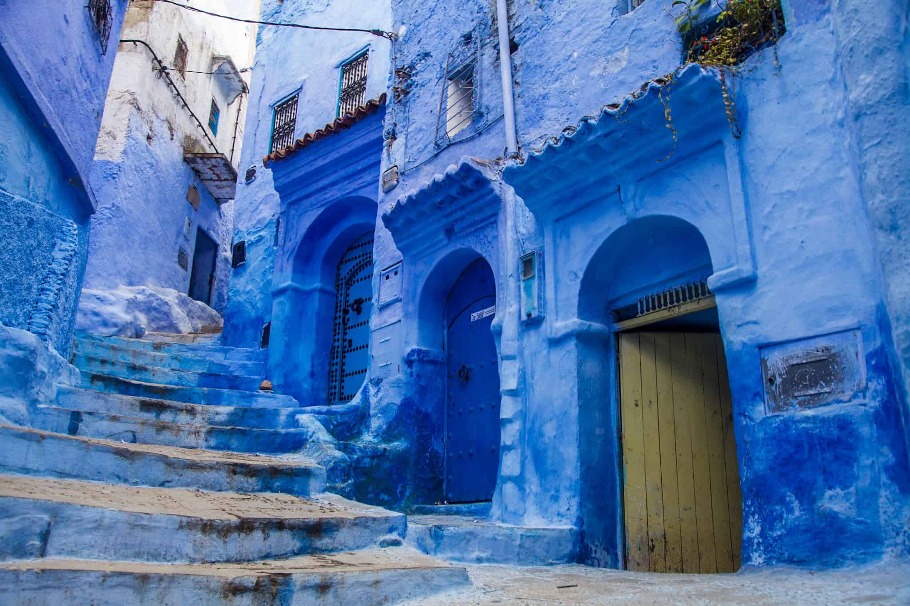
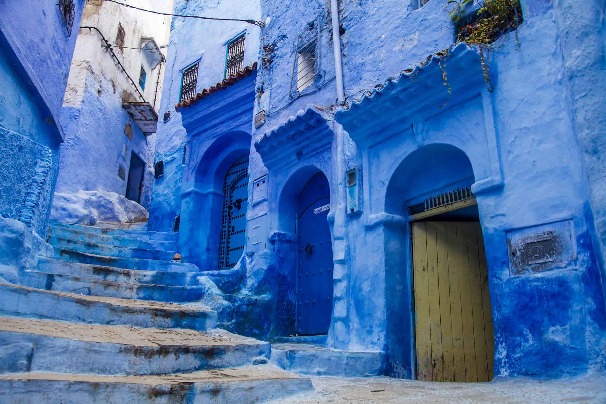

SOUSS :
Agadir
Agadir est une destination qui plaira à tous les types de voyageurs. Que vous soyez à la recherche de farniente, d'aventures ou de découvertes culturelles, vous trouverez votre bonheur dans cette ville dynamique et accueillante...
Les activités :
Excursions :
Vallée du Souss: Découvrez les paysages verdoyants de la vallée du Souss, ses villages berbères et ses oasis.
Parc national de Souss-Massa: Observez la faune et la flore de ce parc national, notamment les flamants roses.
Essaouira: Cette cité portuaire, classée au patrimoine mondial de l'UNESCO, est réputée pour ses remparts, son souk et son atmosphère bohème.
Sports nautiques: En plus du surf et du kitesurf, vous pourrez pratiquer la plongée sous-marine, le jet-ski, ou encore la pêche en haute mer.
Détente: Les nombreux hôtels et complexes hôteliers d'Agadir proposent une large gamme de services et d'activités pour se détendre : spa, hammam, golf, etc.
Gastronomie: Dégustez les spécialités locales telles que le tajine, le couscous ou le poisson grillé.
Conseils pratiques
Quand partir ?
La meilleure période pour visiter Agadir est de mai à octobre, lorsque les températures sont douces et ensoleillées.
Comment s'y rendre ?
Agadir dispose d'un aéroport international desservi par de nombreuses compagnies aériennes.
Où loger ?
Vous trouverez à Agadir une large gamme d'hébergements pour tous les budgets, des hôtels de luxe aux riads traditionnels.


 
